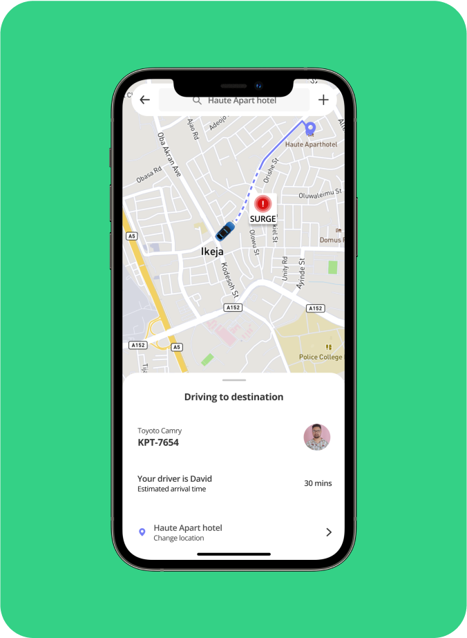
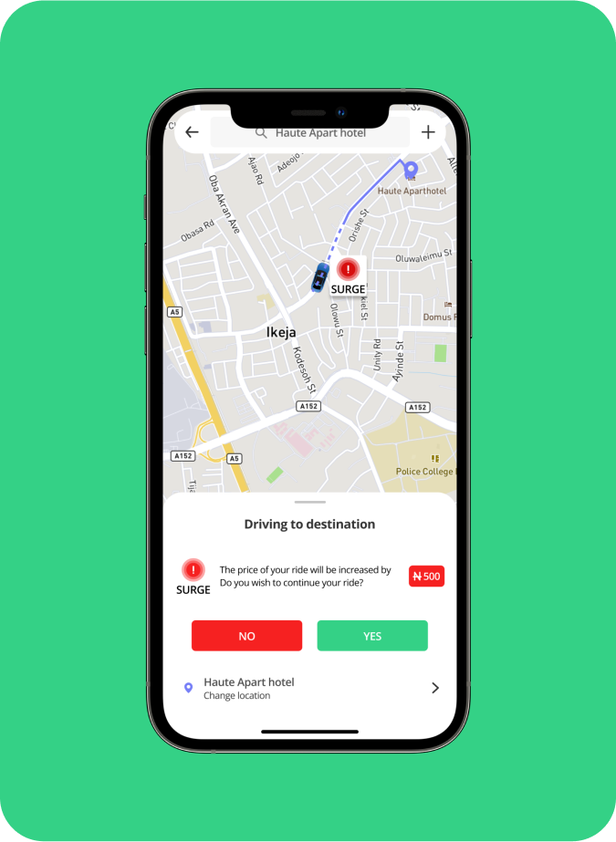

<script>
    let page = "bolt";
    let pPath;
    let prev = 'https://nachonacho.com/';
    let next = './increst.html';
</script>
<script src="../js/header.js"></script>
<main id="boltPage" class="works">
    <section id="bannerSect" style="background-image: url(../assets/images/bolt/bolt-banner.png);">
        <div class="bodyCont">
            <div class="bannerFlex">
                <div class="txtContent">
                    <h1>Improving Bolt’s Pricing Strategy</h1>
                    <div class="content">
                        Get accurate pricing information and enjoy a seamless
                        and satisfying driving experience.
                    </div>
                </div>
                
            </div>
        </div>
    </section>
    <div id="otherBody" class="bodyCont">
        <div class="eachSect" id="roleDuration">
            <div class="eachCol">
                <h2>Role</h2>
                <div class="content">
                    UX Designer <br />
                    UX Researcher
                </div>
            </div>
            <div class="eachCol">
                <h2>Duration</h2>
                <div class="content">5 Weeks</div>
            </div>
        </div>
        <div class="eachSect" id="overview">
            <h2>Overview</h2>
            <div class="content">
                Bolt is the first European super-app, aiming to make urban
                mobility more affordable, safe, and sustainable. Their mission
                is to help people save time, money, reduce stress, and enhance
                cities, while empowering millions of entrepreneurs such as
                drivers, couriers, restaurant owners, and store owners.<br /><br />

                Bolt embodies the essence of freedom of movement and strongly
                believes that cars should be accessible to all at a low price.
                However, the fluctuation in ride prices can be discouraging for
                those with limited financial means. Bolt's pricing model, which
                changes based on traffic and time, often fails to provide
                customers with sufficient prior information. This contradicts
                their mission of saving money and making transportation
                affordable. Customers can find it frustrating when the price
                increases after booking a car, as they may not have enough funds
                to cover the updated cost. The delayed information leads to a
                poor user experience.
            </div>
        </div>
        <div class="eachSect" id="whatProblem">
            <h2>What is the Problem?</h2>
            <div class="content gridCont">
                <div class="eachCol">
                    <div class="num">1.</div>
                    <div class="txt">
                        Users often experience ride prices changing after they
                        reach the bus stop, resulting in them having to pay more
                        than initially anticipated. This can pose a significant
                        problem if the user does not have sufficient funds to
                        cover the increased cost.
                    </div>
                </div>
                <div class="eachCol">
                    <div class="num">2.</div>
                    <div class="txt">
                        Users may have a negative driving experience with a
                        particular driver, yet they might still be suggested the
                        same driver for another ride.
                    </div>
                </div>
                <div class="eachCol">
                    <div class="num">3.</div>
                    <div class="txt">
                        Users often encounter significantly higher ride prices
                        compared to traditional rates.
                    </div>
                </div>
            </div>
        </div>
        <div class="eachSect" id="objectives">
            <h2>Objectives</h2>
            <div class="content gridCont">
                <div class="eachCol">
                    <div class="num">1.</div>
                    <div class="txt">
                        Design a feature that enables customers to anticipate
                        and prepare for price changes resulting from factors
                        such as traffic and time, ensuring that the updated
                        prices do not come as a surprise to them.
                    </div>
                </div>
                <div class="eachCol">
                    <div class="num">2.</div>
                    <div class="txt">
                        Design a feature that empowers users with the ability to
                        choose their preferred driver for a ride.
                    </div>
                </div>
            </div>
        </div>
        <div class="eachSect imgCont">
            
        </div>
        <div class="eachSect" id="researchObj">
            <h2>Research Objectives</h2>
            <div class="content">
                <ol>
                    <li>
                        Understand users' overall experience with the app and
                        service.
                    </li>
                    <li>
                        Understand and evaluate users view on the pricing of
                        rides
                    </li>
                    <li>
                        Identify specific pain points of users and provide
                        appropriate solutions.
                    </li>
                </ol>
            </div>
        </div>
        <div id="process">
            <div class="eachSect" id="researchProcess">
                <h2>Research Process</h2>
                <div class="content">
                    <ol>
                        <li>Secondary Research</li>
                        <li>Competitive analysis</li>
                        <li>User Survey</li>
                    </ol>
                </div>
            </div>
            <div class="eachSect" id="secondaryResearch">
                <h3>1. Secondary Research</h3>
                <div class="content">
                    Based on my research on user reviews from the Google Play
                    Store, only a few people reported having a positive
                    experience with the app, while many users encountered
                    multiple issues. However, one common and consistent problem
                    emerged: the price changing after reaching the destination
                    due to surges or peak times. This dynamic frustrated users
                    and led to numerous complaints.<br /><br />

                    Furthermore, users expressed dissatisfaction with the
                    quality of driver services, with one individual stating that
                    drivers should receive orientation before being allowed to
                    pick up customers. Although a star rating system exists, it
                    does not necessarily determine which drivers are suggested
                    to users.
                </div>
            </div>
            <div class="eachSect imgCont">
                
            </div>
            <div id="analysis">
                <div class="eachSect" id="competitiveAnalysis">
                    <h3>2. Competitive Analysis</h3>
                    <div class="content">
                        I downloaded both the Bolt and Uber apps to assess their
                        user experience and overall feel. <br />However, I was
                        unable to download the Lyft app as it is not available
                        in my country. Therefore, my research on Lyft was based
                        on secondary sources such as websites and user reviews.
                        In order to differentiate themselves and embody their
                        respective goals, competitors often introduce unique
                        features that set them apart.
                    </div>
                </div>
                <div class="eachSect" id="strength">
                    <h4>Strengths</h4>
                    <div class="content">
                        
                        <div class="txt">
                            Competitors in the ride-hailing industry have
                            specific goals that are reflected in their
                            distinctive features. Bolt aims to provide
                            affordable ride prices, catering to customers across
                            various income ranges, which contributes to their
                            growing market share, particularly in countries like
                            the US.<br /><br />

                            Uber, on the other hand, focuses on affordability
                            through features like ride-sharing, initially
                            introduced by Lyft. This reduces ride costs and
                            helps lower the carbon footprint by optimizing
                            vehicle usage. Uber's commitment to sustainability
                            is further emphasized by allowing multiple
                            drop-offs, offering users a range of convenient
                            options.<br /><br />

                            Lyft pioneered the concept of ride-sharing, bridging
                            the gap between public transportation and private
                            cars. This approach saves money and reduces carbon
                            emissions by reducing the number of vehicles on the
                            road. Lyft's comprehensive background checks for
                            drivers contribute to passenger safety, addressing
                            concerns such as incidents of driver misuse. Driver
                            selection is not solely based on star ratings but
                            also incorporates thorough background checks.
                        </div>
                    </div>
                </div>
                <div class="eachSect" id="weaknesses">
                    <h4>Weaknesses</h4>
                    <div class="content">
                        
                        <div class="txt">
                            Every one of them had similar business models that
                            used dynamic pricing. A pricing system that depends
                            on different factors such as weather, traffic, time,
                            etc. This enables them to maximize their profit.
                            However, the time when the price is revealed to you
                            differs. Uber and Lyft tell you their price before
                            taking the ride while Bolt tells you the price after
                            you get to the destination.
                        </div>
                    </div>
                </div>
            </div>
        </div>
        <div id="survey">
            <div class="eachSect" id="userSurvey">
                <h3>3. User Survey</h3>
                <div class="content">
                    To gain insights into users' frustrations and pain points
                    regarding price changes and the driving experience, a survey
                    was conducted. The survey collected responses from 26
                    participants and included relevant questions to validate the
                    issues identified in the secondary research.
                </div>
            </div>
            <div class="eachSect" id="relevantSurveyResponse">
                <h4>Relevant survey responses</h4>
                <div class="content">
                    
                    <div class="h4">
                        The user survey further validated the problems
                        identified in the secondary research.
                    </div>
                    <div class="txt">
                        <div class="cusBul">
                            <div>.</div>
                            <div class="bulTxt">
                                71% of the participants said that the price
                                became higher after getting to the destination
                            </div>
                        </div>
                        <div class="cusBul">
                            <div>.</div>
                            <div class="bulTxt">
                                14% of the participants said that the drivers
                                were not friendly.
                            </div>
                        </div>
                    </div>
                </div>
            </div>
            <div class="eachSect" id="quote">
                <blockquote>
                    “I was charged a particular fee prior to the ride but at the
                    end of the ride, I was charged higher” - Participant
                </blockquote>
            </div>
        </div>
        <div class="eachSect" id="userPersona">
            <h2>User Persona</h2>
            <div class="content">
                <p>
                    I created two fictitious personas to represent the needs and
                    frustrations of a larger group of Bolt users.
                </p>
                <div class="imgCont">
                    
                    
                </div>
            </div>
        </div>
        <div id="solution">
            <div class="eachSect">
                <h2 class="noMarg">Solution</h2>
            </div>
            <div id="pricing">
                <div class="eachSect flex left">
                    <div class="fadeAnim right">
                        <div class="imgCont">
                            
                        </div>
                    </div>
                    <div class="fadeAnim left">
                        <div class="txtCont">
                            <h3>1. Pricing</h3>
                            <div class="content">
                                Bolt and other mobility service providers use a
                                pricing system known as Dynamic or Surge
                                pricing.<br /><br />

                                Dynamic pricing is a pricing strategy that
                                allows firms to modify product prices in
                                response to changing demand. The pricing
                                strategy is aimed at getting the best price for
                                a particular product or service in response to
                                changing factors. This pricing methodology is
                                adopted by several industries, such as event
                                ticketing, hospitality, real estate, and
                                transportation.<br /><br />

                                Bolt and other mobility services give prices
                                based on several variables like traffic
                                patterns, weather conditions, time, competitor
                                prices, distance, and demand.
                            </div>
                        </div>
                    </div>
                </div>
                <div class="eachSect flex">
                    <div class="fadeAnim left">
                        <div class="imgCont">
                            
                        </div>
                    </div>
                    <div class="fadeAnim right">
                        <div class="txtCont">
                            <h4>
                                Should Dynamic pricing be removed from bolt?
                            </h4>
                            <div class="content">
                                Dynamic or surge pricing provides a fairly
                                accurate method of setting prices for their ride
                                as a number of variables such as traffic and
                                demand are not predictable. <br /><br />

                                Removing dynamic or surge pricing without having
                                an accurate system of predicting prices would
                                put the company and drivers at a disadvantage.
                                Variables like traffic and demand are
                                unpredictable, and dynamic pricing provides a
                                fair method of setting prices. Without it, the
                                company may experience losses if variables
                                change during the ride, and rides could be
                                overpriced, potentially leading riders to switch
                                to competitors.<br /><br />

                                I firmly believe that dynamic pricing should
                                continue to be utilized as AI and other
                                prediction systems used for pricing variables
                                are often not entirely accurate.
                            </div>
                        </div>
                    </div>
                </div>
                <div class="eachSect flex left">
                    <div class="fadeAnim right">
                        <div class="imgCont">
                            
                        </div>
                    </div>
                    <div class="fadeAnim left">
                        <div class="txtCont">
                            <h4>
                                If dynamic pricing should stay, what then is the
                                problem?
                            </h4>
                            <div class="content">
                                The research findings indicate that Bolt informs
                                their customers about price changes after the
                                ride, which leads to a feeling of being deceived
                                among customers. The issue is not solely about
                                paying an additional amount, but rather the
                                change from the agreed-upon price. <br /><br />

                                Consistency is valued by users, and discovering
                                the price change after the ride worsens the
                                overall experience. <br /><br />

                                Uber solved this by providing upfront pricing
                                before the ride, which is beneficial in terms of
                                transparency. However, it can result in losses
                                for the company if there are changes in the
                                variables during the ride that affect the cost.
                            </div>
                        </div>
                    </div>
                </div>
                <div class="eachSect flex">
                    <div class="fadeAnim left">
                        <div class="imgCont">
                            
                            <!-- <div class="arrowCont">
                                
                            </div> -->
                        </div>
                    </div>
                    <div class="fadeAnim right">
                        <div class="txtCont">
                            <h4>Information</h4>
                            <div class="content">
                                Riders are notified during the ride about surge
                                pricing, which prepares them for an increase in
                                price. This ensures transparency and provides
                                riders with an understanding of the reasons
                                behind the price change. <br /><br />

                                This approach eliminates the surprise and
                                unpreparedness associated with sudden price
                                changes. It gives riders the opportunity to add
                                funds to their account if needed, ensuring they
                                have enough money to cover the adjusted fare.
                            </div>
                        </div>
                    </div>
                </div>
                <div class="eachSect flex left">
                    <div class="fadeAnim right">
                        <div class="imgCont">
                            
                            <!-- <div class="arrowCont">
                                
                            </div> -->
                        </div>
                    </div>
                    <div class="fadeAnim left">
                        <div class="txtCont">
                            <div class="content">
                                The price increase is communicated to the
                                customer, and they are given the option to
                                proceed with the ride or cancel if they find the
                                new price unfavorable. <br /><br />

                                The goal is preparedness and acceptance. Users
                                will be informed about the price hike in advance
                                and given the choice to proceed with the ride or
                                not, ensuring that they are aware of the
                                increased price and have the autonomy to make an
                                informed decision.
                                <br /><br />

                                They won't feel deceived or cheated because they
                                have willingly accepted the increased price
                                before proceeding with the ride.
                            </div>
                        </div>
                    </div>
                </div>
            </div>
            <div class="eachSect flex" id="drivingExperience">
                <div class="fadeAnim left">
                    <div class="imgCont">
                        
                        <!-- <div class="arrowCont">
                            
                        </div> -->
                    </div>
                </div>
                <div class="fadeAnim right">
                    <div class="txtCont">
                        <h3>2. Driving Experience</h3>
                        <div class="content">
                            Bolt automatically fixes you to the nearest
                            available driver. It is true that you are allowed to
                            rate the driver after a ride. but the ratings are
                            only used by the Bolt to determine if the driver
                            should remain on the platform. Users should have the
                            ability to choose their driver based on ratings and
                            location, as they are the ones taking the ride. This
                            gives them control and ensures they are not paired
                            with a driver they had a negative experience with in
                            the past.
                        </div>
                    </div>
                </div>
            </div>
        </div>
        <div class="eachSect" id="usabilityTest">
            <h2>Usability Test</h2>
            <div class="content">
                Maze.co was used for conducting usability testing, where users
                were asked to provide feedback on the overall impression of the
                screens and suggest improvements for enhancing the user
                experience. <br /><br />

                Additionally, they were instructed to perform basic operations
                associated with requesting a ride.
            </div>
        </div>
        <div class="eachSect imgCont">
            
        </div>
        <div class="eachSect imgCont">
            
        </div>
        <div class="eachSect" id="keyTakeaway">
            <h2>Key Takeaway</h2>
            <div class="content">
                I began this project with the assumption that people primarily
                use Bolt for its affordability and easy access to remote areas.
                However, through my research, particularly in my locality
                (Nigeria), I discovered that many users prioritize comfort when
                choosing mobility services like Bolt. <br /><br />

                They are willing to pay the extra price per ride for the
                experience of being in control. <br /><br />

                I believe that these little adjustments will increase Bolt's
                market share tremendously and boost revenue.
            </div>
        </div>
        <script src="../js/worksFooter.js"></script>
    </div>
</main>
<script src="../js/footer.js"></script>
